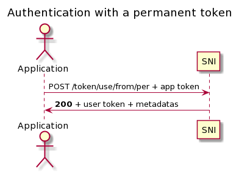
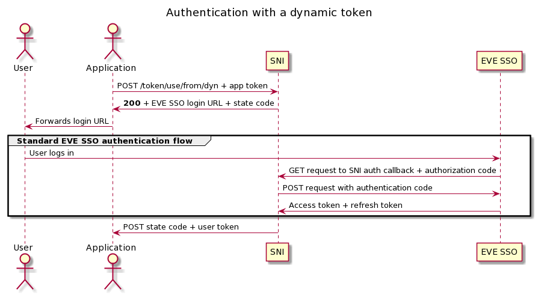

Authentication¶
An application that wishes to use SNI must use an app token in order to get a user token, with which API request can be done. There are two kinds of app tokens.
Permanent app token: this token is tied to a user, and inherits the privileges of that user.
See
sni.routers.token.PostUseFromPerOutfor the response model.Dynamic app token: this token is tied to
root, and requires the user to authenticate via the ESI SSO; the user token inherits the privileges of the user that logged in.See
sni.routers.token.PostTokenUseFromDynOutfor the response model. The notification sent by SNI to the application looks like this (see alsosni.routers.esi.PostCallbackEsiOut){ "character_id": 0000000000, "state_code": "dcbd81af-4df0-478b-a8b9-baee74e2d517", "user_token": "eyJhbGciOiJIUzI1NiIsIn..." }
Once a user token is obtained, all subsequent requests (for that user) should be authenticated with it.
App and user tokens take the form of a JWT bearer token, and must be included
to requests under the Authorization header:
Authorization: Bearer <token>
User tokens deriving from a permanent app tokens are themselves permanent, but expire after 48h of inactivity. User tokens deriving from dynamic app tokens are valid for 24h. Note that user and app tokens can be manually revoked. If an app token is revoked, then user tokens deriving from it are also revoked.